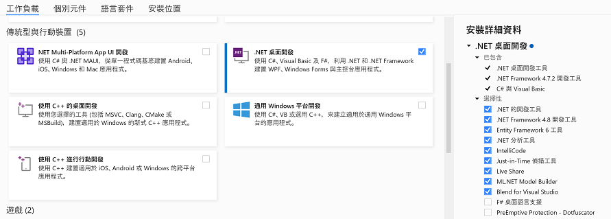
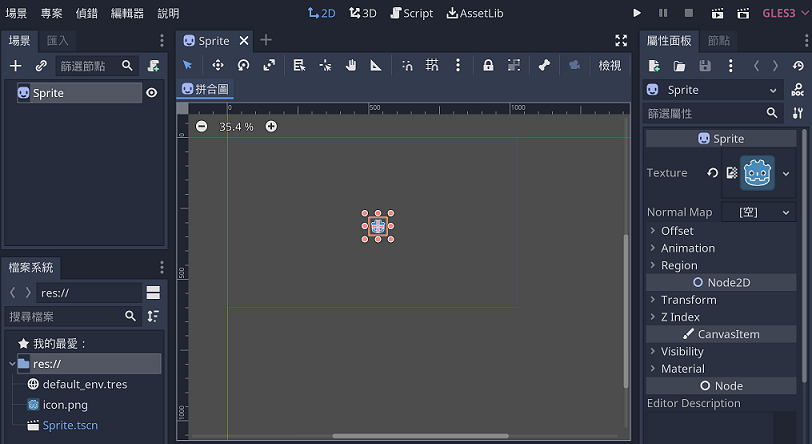

準備工作
安裝軟體包含.Net SDK、Visual Studio、Godot遊戲引擎。
下載.Net SDK
請連結至.Net官網 (https://dotnet.microsoft.com/en-us/download) 下載.NET 6 SDK x64版本，如果是Apple Mac，請點選 All .Net 6 downloads 後，選擇macOS installer，請注意：Mac CPU為M版本請下載 macOS Arm64版本，Intel CPU請下載 macOS x64版本。下載後請執行安裝。
下載Visual Studio
請下載Visual Studio 2022或Visual Studio 2022 Community(https://visualstudio.microsoft.com/zh-hant/vs/community/) installer後，請安裝 .Net桌面開發 工作負載(如下圖)。安裝Visual Studio 2022或Visual Studio 2022 Community後請使用微軟帳號進行免費啟用。

建立並執行Visual Studio C#主控台專案
- 開啟Visual Studio
- 選擇建立新的專案
- 專案範本選擇 C# - Windows - 主控台，選擇主控台應用程式後選下一步
- 設定專案名稱與確認專案位置後選下一步
- 架構請使用預設.Net 6後選建立
- 專案中Program.cs為主程式，點選選項按鈕 綠色三角形專案名稱 執行專案
下載Godot遊戲引擎
課程將搭配Godot遊戲引擎並使用C#語言實作物件導向概念，請下載Godot .NET 64bit C# support(x86_64)(https://godotengine.org/download/windows/)後，依照下列步驟設定Godot執行環境。
- 下載Godot .NET 64bit C# support(x86_64)檔案
- 解壓縮下載檔案至特定磁碟機(如C磁碟機)
- 進入Godot檔案夾後點選 Godot_v3.5.1-stable_mono_win64.exe 即可執行Godot，使用者也可以將Godot執行檔釘選至工作列
建立並執行Godot專案
- 在磁碟機建立Godot專案檔案夾(例如project1)，檔案夾用於儲存專案相關檔案
- 開啟Godot檔案夾並執行Godot win64應用程式
- 點選新增專案，設定專案名稱並將專案路徑設定為專案檔案夾(如project1)位置，點選建立並編輯
- 點選左上 + 按鈕並輸入 Sprite後，選擇Sprite並點選建立
- 點選左下icon.png並將其拖曳至右邊 Sprite 屬性面板中的 Texture

- 將icon.png圖片拖曳至視窗中後，選擇選項清單 場景-儲存場景並點選右上角 白色三角形 按鈕執行專案